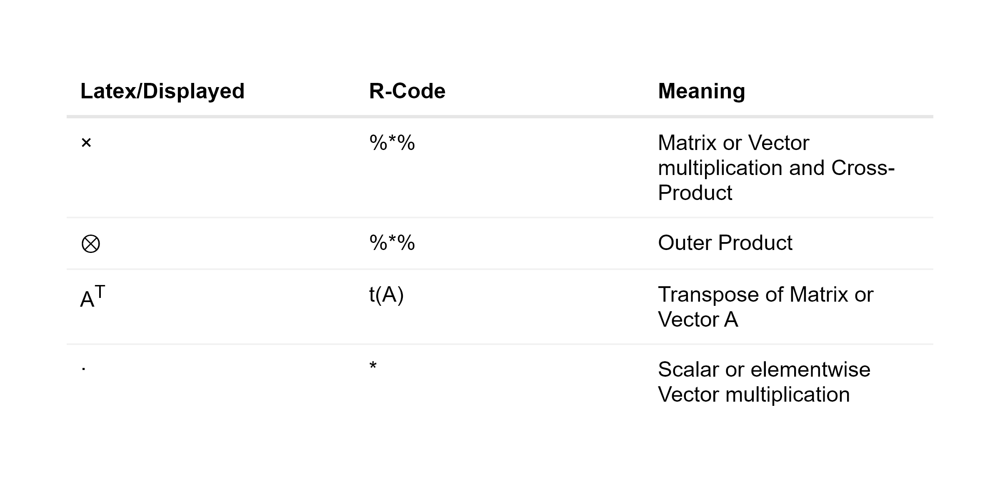

Chapter 4 Mathematical Fundations
This chapter provides an overview of the mathematical calculations and conventions used in this Thesis. It’s important to note that most of the time mathematical formulas are written in matrix notation. In the majority of cases, this will result in a direct translation into R-code. All necessary assumptions needed for the modeled return structure are provided in this chapter to enable each reader to make sense of the stated formulas. It is crucial to note that reality is too complicated and can only be partially modeled. Simplistic, basic models are employed that don’t hold up in real-world situations, but these models or variations on them are frequently used in finance and have proven to be helpful. The complexity of solving advanced and basic models do not differ for the PSO, because the dimension of the objective function is based on the number of selectable elements, see chapter 6.
4.1 Basic Operators
A compendium that compares commonly used mathematical symbols to R-code and its meanings can be found in the table below:

4.2 Return calculation
Any portfolio optimization strategy based on historical data must start with returns. These returns are calculated using adjusted closing prices, which show the percentage change over time. Adjusted closing prices are reflecting dividends and are cleaned of by stock splits and rights offerings. These Returns are essential for comparing assets and for analyzing dependencies.
4.2.1 daily returns
The default timeframe for all raw data in this thesis is one workday and only simple returns are used. The simple returns can be calculated as follows if we know the adjusted closing price \(P\) of one asset on workdays \(t_i\) and \(t_{i+1}\): \[ R_{i+1} = \frac{P_{t_{i+1}}}{P_{t_i}}-1 \]
4.3 Markowitz Modern Portfolio Theory (MPT)
In 1952, Harry Markowitz published his first ground-breaking work, which had a significant influence on modern finance, primarily by outlining the effects of diversification and efficient portfolio. The definition of an efficient portfolio is one that has either the maximum expected return for a given risk target or the minimum risk for the given expected return target. A simple quote to define diversification could be: “A portfolio has the same return but less variance than the sum of its parts”. This is true if the assets are not perfectly correlated because bad and good movers can make up for each other, reducing the likelihood of extreme events. You can find more specific information at (Maringer 2005).
4.3.1 Assumptions of Markowitz Portfolio Theory
The following are the Markowitz assumptions that can be combined, according to (Maringer 2005):
- Perfect market without taxes or transaction costs.
- Short sales are disallowed.
- Assets are infinitely divisible.
- Expected Returns, Variances and Covariances contain all information.
- Investors are risk-adverse, they will only accept greater risk if they are compensated with a higher expected return.
The assumption that the returns are normally distributed is not required, but it will be assumed in this case to make the problem simpler. (Maringer 2005) has further details regarding the requirements for utilizing other distributions. It is obvious that these assumptions are unrealistic in real-life.
4.4 Portfolio Math
Proofs for the fundamental calculations required for portfolio optimization as shown in (Zivot 2021) will be provided in this section. The returns are presented differently than in most sources, because its the most common data-format used in practice. Suppose there are \(N\) assets that are described by a return vector \(R\) of random variables and a portfolio weight vector \(w\), respectively: \[ R = \begin{bmatrix} R_{1} & R_{2} & \cdots & R_{N} \end{bmatrix} , \ \ w = \begin{bmatrix} w_{1} \\ w_{2} \\ \cdots \\ w_{N} \end{bmatrix} \]
Each return is additionally simplified in this thesis so that it is normally distributed with \(R_i = \mathcal{N}(\mu_i, \sigma_i^2)\). As a result, linear combinations of normally distributed random variables are jointly normal distributed and have a mean, variance, and covariance that can be used to fully describe them.
4.4.1 expected returns
The following formula can be used to get the expected returns of a vector with normally distributed random variables \(R \in \mathbb{R}^{N}\):
\[\begin{align*}
E[R] &=
\begin{bmatrix}
E[R_{1}] & E[R_{2}] & \cdots & E[R_{N}]
\end{bmatrix}\\
&=
\begin{bmatrix}
\mu_{1} & \mu_{2} & \cdots & \mu_{N}
\end{bmatrix}
=
\mu
\end{align*}\]
and \(\mu_i\) can be estimated in R with the base-function mean() and historical data.
4.4.2 expected portfolio return
The following equation can be used to get the linear combination of expected returns \(mu\) and a weighting vector \(w\) (for example, portfolio weights): \[\begin{align*} \mu \times w &= \begin{bmatrix} E[\mu_{1}] & E[\mu_{2}] & \cdots & E[\mu_{N}] \end{bmatrix} \times \begin{bmatrix} w_{1} \\ w_{2} \\ \cdots \\ w_{N} \end{bmatrix} \\ &= E[\mu_{1}] \cdot w_1 + E[\mu_{2}] \cdot w_2 + \cdots + E[\mu_{N}] \cdot w_{N} = \mu_P \end{align*}\]
4.4.3 portfolio returns
Let \(R \in \mathbb{R}^{T \times N}\) denote a realized return Matrix of \(N\) assets and \(T\) days in the past. The portfolio return on each day can be calculated with the formula of the expected portfolio return. This is possible on all days \(T\) by: \[ R \times w = \begin{bmatrix} R_{1, 1} & R_{1, 2} & \cdots & R_{1, N} \\ R_{2, 1} & R_{2, 2} & \cdots & R_{2, N} \\ \vdots & \vdots & \ddots & \vdots \\ R_{T, 1} & R_{T, 2} & \cdots & R_{T, N} \\ \end{bmatrix} \times \begin{bmatrix} w_{1} \\ w_{2} \\ \vdots \\ w_{N} \end{bmatrix} = \begin{bmatrix} R_{1}^P \\ R_{2}^P \\ \vdots \\ R_{N}^P \end{bmatrix} = R_P \]
4.4.4 Covariance
The general formula of the covariance matrix \(\sum\) of a random vector \(R\) with \(N\) normally distributed elements and \(\sigma_{i,j}\) as correlation of two unique assets is described as:
\[\begin{align*}
Cov(R) &= E[(R-\mu)^T \times (R-\mu)] \\
&= \begin{bmatrix}
\sigma_1^2 & \sigma_{1,2} & \cdots & \sigma_{1,N} \\
\sigma_{2, 1} & \sigma_2^2 & \cdots & \sigma_{2, N} \\
\vdots & \vdots & \ddots & \vdots \\
\sigma_{N, 1} & \sigma_{N, 2} & \cdots & \sigma_N^2 \\
\end{bmatrix}\\
&=\sum
\end{align*}\]
and can be estimated in R with the base-function cov() and historical data.
4.4.5 Portfolio Variance
Let \(R\) be a random vector with \(N\) normally distributed elements and \(w\) a weighting vector. Suppose the covariance matrix \(\sum\) of \(R\) is known, then the variance of the linear combination of \(R\) can be calculated as: \[\begin{align*} Var(R \times w) &= E[(R \times w - \mu \times w)^2] \\ &= E[((R - \mu) \times w)^2] \end{align*}\]
Since \((R - \mu) \times w\) is a scalar, it can be transformed from \(((R - \mu) \times w)^2\) to \(((R - \mu) \times w)^T \times ((R - \mu) \times w)\) and results in: \[\begin{align*} Var(R \times w) &= E[((R - \mu) \times w)^T \times ((R - \mu) \times w)]\\ &= E[(w^T \times (R - \mu)^T) \times ((R - \mu) \times w)]\\ &= w^T \times E[(R - \mu)^T \times (R - \mu)] \times w \\ &= w^T \times \sum \times w \end{align*}\]
The same hold for a estimation of \(\sum\).